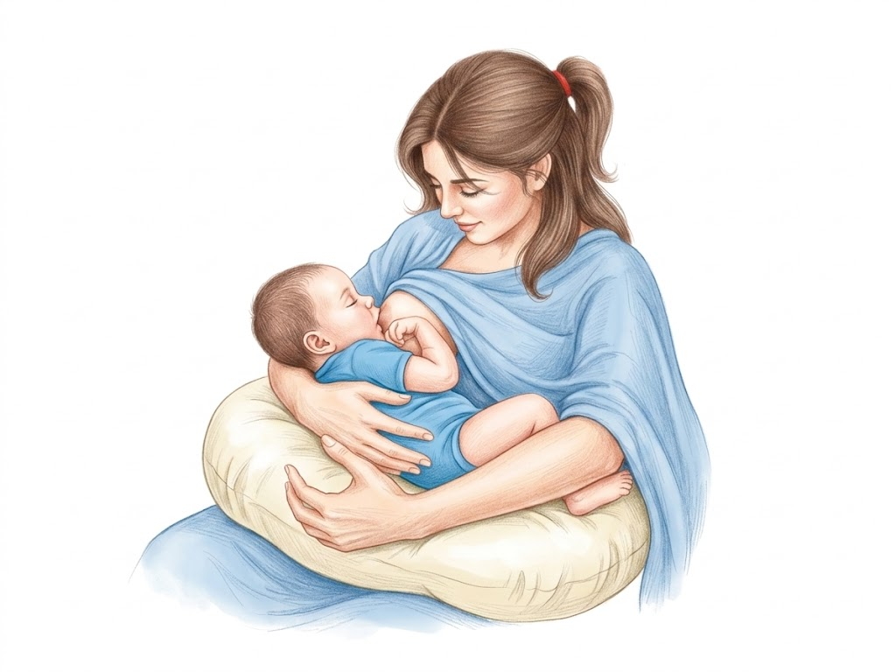
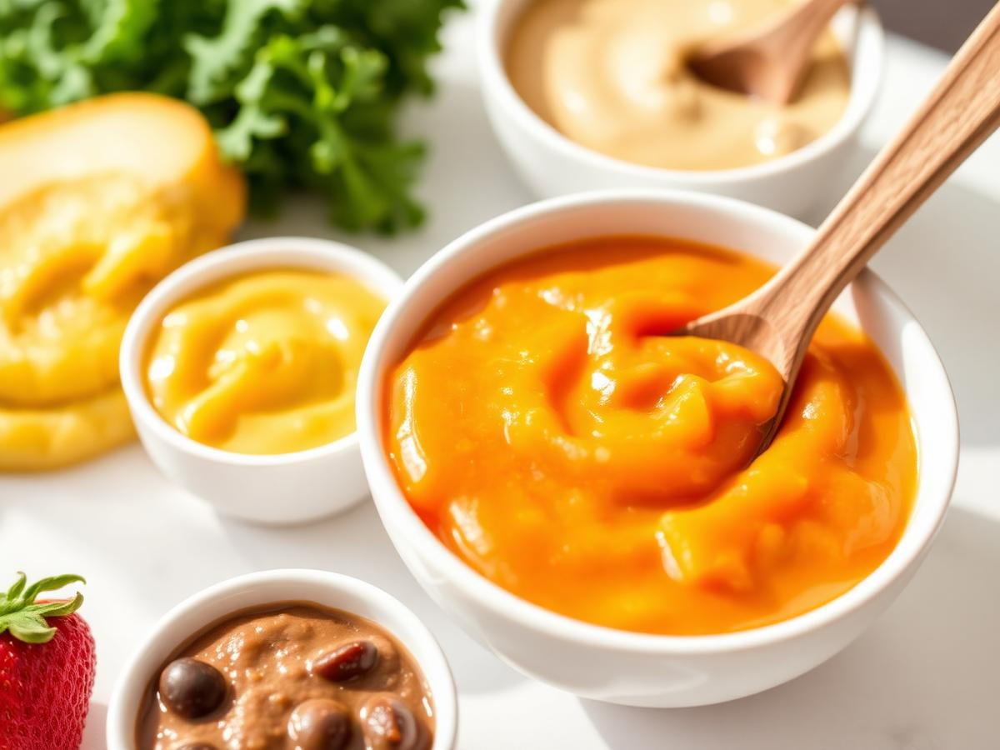
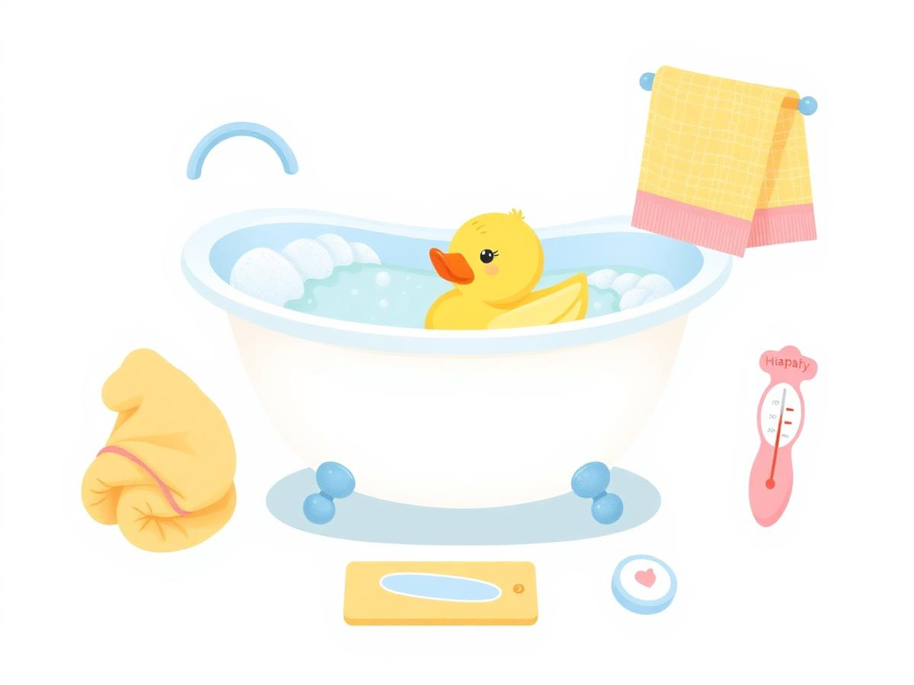
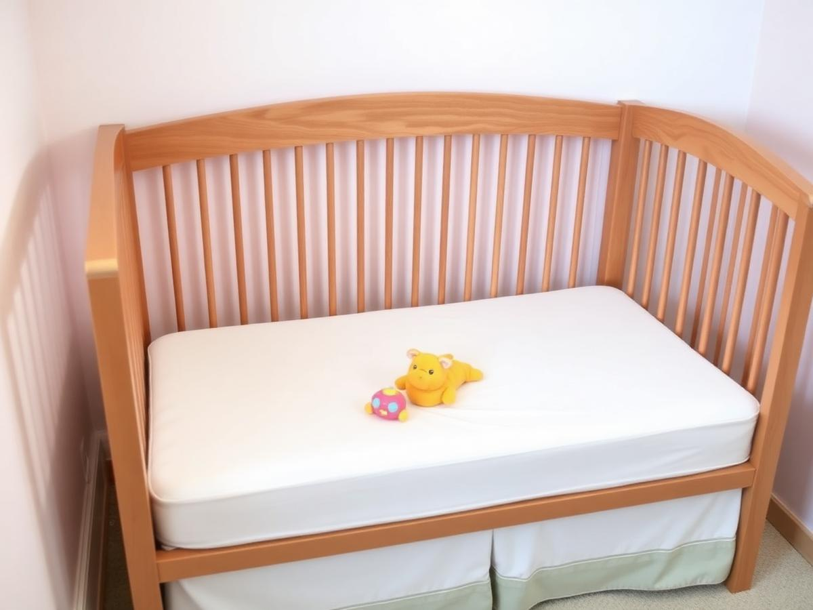
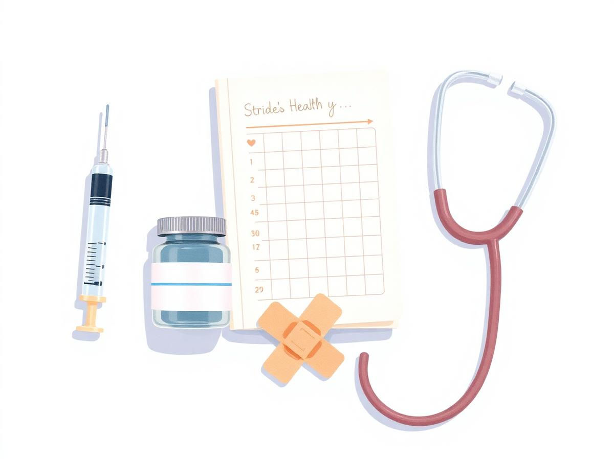
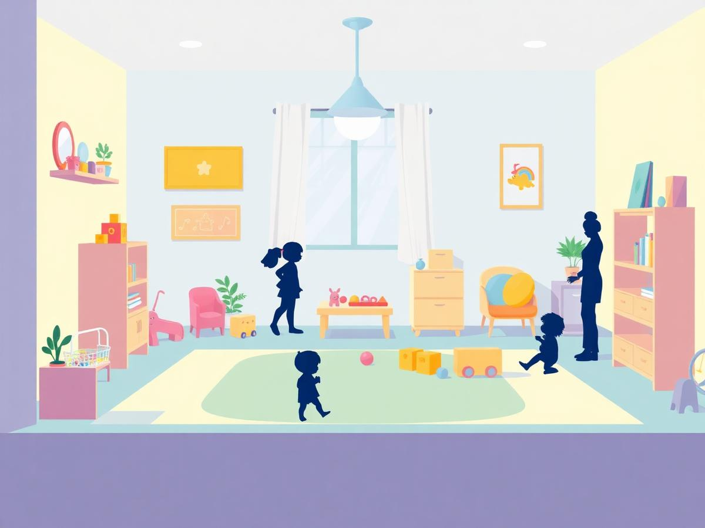

Um guia completo, carinhoso e ilustrado sobre cuidados de bebês. Aqui você encontra todo o conteúdo — do primeiro banho ao calendário de vacinas — com dicas práticas e curiosidades sobre esses pequenos gigantes.
Você precisa acompanhar um bebê por pelo menos 5 horas seguidas, em 3 dias diferentes de uma mesma semana, sempre com a autorização e a supervisão dos pais ou responsáveis. Nesse tempo você observa, ajuda e aprende — trocando fraldas, dando o banho, preparando a papinha, colocando para dormir e, principalmente, dando colo.
Anote horários de mamada e sono, alergias, telefone dos pais e do pediatra. Peça para a mãe mostrar onde ficam fraldas, roupas, remédios e o cartão da criança.
Lave as mãos com água e sabão antes de pegar o bebê, antes de preparar alimentos e depois de cada troca de fralda. É a regra número 1 contra infecções.
Jamais deixe o bebê sozinho no trocador, no sofá, na cama ou na banheira — nem por "um segundinho". Quedas e afogamentos acontecem em instantes.
Faça um diário com data, horário, o que o bebê comeu, quanto dormiu e o que você observou. Esse relato é parte do cumprimento do requisito.

A recomendação da Organização Mundial da Saúde e do Ministério da Saúde é aleitamento materno exclusivo até os 6 meses: nada de água, chá, suco ou outro leite nesse período. O leite materno já tem toda a água e os nutrientes de que o bebê precisa.
A partir dos 6 meses começa a alimentação complementar, mas o peito continua: o ideal é amamentar até os 2 anos ou mais.
Desmamar é o processo gradual de substituir o leite materno por outros alimentos, até que a criança pare de mamar no peito. Deve ser feito aos poucos, com carinho e paciência — nunca de forma brusca, nem com truques como passar substâncias amargas no seio.
Alguns alimentos são perigosos para o organismo ainda imaturo do bebê. Guarde esta lista:
Sempre corte em pedaços pequenos, macios e amasse bem os alimentos.


Preparando: feche janelas para evitar corrente de ar, separe antes toalha, fralda, roupa, sabonete neutro e pente. Encha a banheira com cerca de 15 cm de água e cheque a temperatura: 36 °C a 37 °C — teste com o cotovelo ou com o dorso do pulso; deve estar morninha.
Trocando a fralda: limpe sempre da frente para trás (em meninas, é essencial), use algodão com água morna ou lenços sem álcool, deixe a pele arejar alguns segundos, aplique pomada de assadura se necessário e feche a fralda abaixo do coto umbilical nos recém-nascidos.
Vestindo: escolha roupa de algodão, adequada ao clima; passe a peça pela cabeça abrindo bem a gola e conduza o bracinho pela manga puxando a mão do bebê — nunca empurre o braço. A regra prática: vista o bebê com uma camada a mais do que você está usando.

Ritual da noite: banho morno, mamada tranquila, luz baixa, uma canção suave e o bebê no berço ainda sonolento, mas acordado — assim ele aprende a adormecer sozinho. Um recém-nascido dorme de 16 a 18 horas por dia, em blocos curtos; por volta de 6 meses muitos já dormem períodos longos à noite.
O peso ao nascer de um bebê saudável a termo fica entre 2,5 kg e 4 kg, com média em torno de 3,3 kg. Nos primeiros dias é normal perder até 10% do peso e recuperá-lo até o 15º dia de vida.
| Idade | Peso esperado (média) | Comprimento | Marco |
|---|---|---|---|
| Nascimento | 2,5 – 4,0 kg (≈3,3 kg) | 48 – 50 cm | Reflexos de sucção e preensão |
| 6 meses | ≈ 7 – 8 kg (o dobro do peso de nascimento) | ≈ 65 – 67 cm | Senta com apoio, começa a papinha, primeiros dentinhos |
| 12 meses | ≈ 9,5 – 10,5 kg (o triplo do peso de nascimento) | ≈ 74 – 76 cm | Fica de pé, dá os primeiros passos, fala palavrinhas |
Consulte a Caderneta da Criança e registre os dados reais. Se não tiver acesso, use sua própria caderneta ou a de um familiar ou amigo próximo.
| Idade avaliada | Peso registrado na caderneta | Valor esperado / curva | Comparação |
|---|---|---|---|
| ____________ | ____________ kg | ____________ | ________________________________ |
Observe principalmente se a criança acompanha sua trajetória na curva ao longo do tempo. Anote sua conclusão: ________________________________________________________________________.
Na Caderneta da Criança o peso e o comprimento são marcados em gráficos com faixas coloridas (percentis / escore-z). O importante não é estar exatamente na média, mas seguir subindo dentro da sua faixa. Uma curva que fica plana ou desce é sinal de alerta e pede avaliação do pediatra.
O cérebro do bebê forma até 1 milhão de novas conexões neuronais por segundo nos primeiros anos. Conversar, cantar e olhar nos olhos é literalmente construir cérebro.
Se for realmente necessário oferecer leite ordenhado, use copinho, colher ou copo de transição. E, para acalmar, aposte no colo, no peito, no balanço suave e na voz — foi para isso que a natureza nos equipou.
A fontanela, popularmente chamada de moleira, é o espaço macio entre os ossos do crânio do bebê que ainda não se uniram. Ela permite que a cabeça se molde durante o parto e que o cérebro cresça rapidamente no primeiro ano.
Pode-se tocar e lavar normalmente durante o banho — só não se deve pressionar. Fique atento: moleira muito funda pode indicar desidratação; moleira abaulada e tensa, com febre ou vômitos, exige atendimento médico imediato.

No Brasil, o "cartão da criança" é a Caderneta de Saúde da Criança, entregue gratuitamente na maternidade pelo SUS (em Portugal chama-se Boletim de Saúde Infantil; em outros países há documentos equivalentes). Nela encontramos:
Leve a caderneta em todas as consultas e vacinas, e guarde-a como um documento — ela acompanha a criança até os 9 anos.
O Programa Nacional de Imunizações oferece todas essas vacinas gratuitamente nas unidades de saúde. Confira o cartão do bebê que você está cuidando — e o seu também! Se algo estiver faltando, avise os responsáveis para procurarem o posto de saúde e atualizar.
| Idade | Vacina | Protege contra |
|---|---|---|
| Ao nascer | BCG | Formas graves de tuberculose (meningite tuberculosa) |
| Ao nascer | Hepatite B | Hepatite B |
| 2 meses | Pentavalente (1ª) | Difteria, tétano, coqueluche, hepatite B e Haemophilus influenzae b |
| 2 meses | VIP (1ª) | Poliomielite (paralisia infantil) |
| 2 meses | Pneumocócica 10-valente (1ª) | Pneumonia, otite e meningite por pneumococo |
| 2 meses | Rotavírus (1ª) | Diarreia grave por rotavírus |
| 3 meses | Meningocócica C (1ª) | Meningite meningocócica C |
| 4 meses | Pentavalente, VIP, Pneumo 10 e Rotavírus (2ª) | Mesmas doenças acima |
| 5 meses | Meningocócica C (2ª) | Meningite C |
| 6 meses | Pentavalente e VIP (3ª); Covid-19; Influenza (anual) | Mesmas doenças, Covid-19 e gripe |
| 9 meses | Febre amarela | Febre amarela |
| 12 meses | Tríplice viral (1ª) | Sarampo, caxumba e rubéola |
| 12 meses | Pneumo 10 e Meningo C (reforços) | Pneumococo e meningite C |
| 15 meses | DTP (1º reforço), VOP, Tetra viral, Hepatite A | Difteria, tétano, coqueluche, pólio, sarampo, caxumba, rubéola, catapora e hepatite A |
| 4 anos | DTP (2º reforço), VOP, Varicela | Difteria, tétano, coqueluche, pólio e catapora |

Entreviste funcionários de uma creche. Marque a visita com antecedência, leve um caderno e seja educado. Roteiro sugerido de perguntas:
Um recém-nascido tem cerca de 300 ossos; muitos se fundem com o tempo até formar os 206 do adulto.
Nas primeiras semanas o bebê chora, mas quase não produz lágrimas: as glândulas lacrimais só amadurecem por volta de 1 mês.
Ele enxerga nitidamente só a uns 20–30 cm — exatamente a distância do rosto da mãe durante a mamada.
Bebês respiram de 30 a 60 vezes por minuto, quase o triplo de um adulto.
As impressões digitais e plantares já estão prontas antes do nascimento — por isso a maternidade registra o pezinho.
O bebê reconhece a voz da mãe desde o útero e se acalma ao ouvir músicas que escutava na gravidez.
Troca de fralda, mamada, brincadeira no tapete de barriga para baixo (tummy time) para fortalecer o pescoço, soneca.
Papinha de legumes amassada (após 6 meses), água em pequenos goles, higiene das mãos e do rostinho, soneca da tarde.
Passeio leve, música, livrinhos de pano, conversa olho no olho — estímulo à linguagem.
Banho morno, massagem com óleo, roupa confortável, mamada calma, luz baixa e berço preparado. Bebê deitado de barriga para cima. Boa noite!